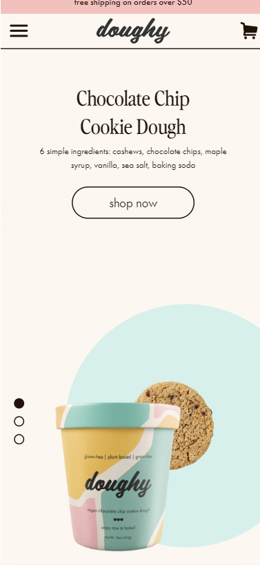
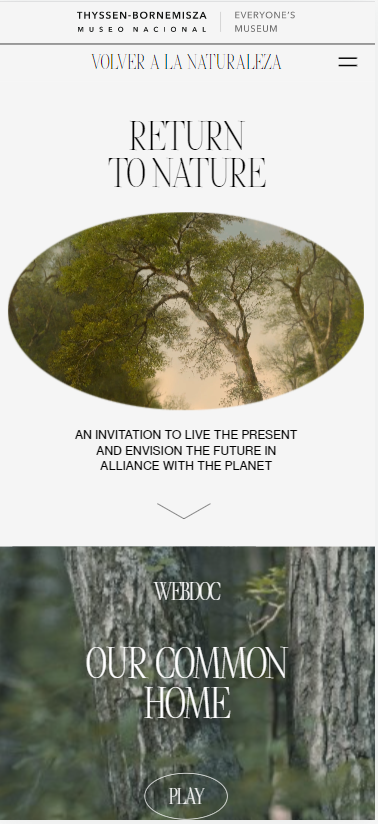
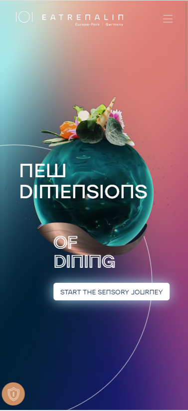

White Space
Doughy
Whitespace is supposed to enhance what is present on the website. It is not supposed to draw the eye; it exists so the eye is drawn to the focal point whether that is a product, person, or idea. This website utilizes the whitespace very well. Immediately upon looking at this website a web user's eye is drawn to the description of the product and then an image of the product. It informs while appealing to the web user without overwhelming them.
Visual Hierarchy
Thyssen-Bornemisza Museo Nacional
Immediately upon opening this website you know exactly what is that this website is for. This website uses very visually engaging content. There is the main heading that relates immediately to the following photo. Your eyes are drawn to the content in the way the designer intended due to the font sizes and image sizes being well thought out and purposeful.
Colors
Eatrenalin
I am in love with this website. I feel like it shows so many great design concepts. One of the foremost being its use of color. The general rule is to not us more than five hues. This website uses more than that, but due to the blending of the background colors, it ties together all of the other colors used. This creates something that is very visually different without it being unappealing to the eye.